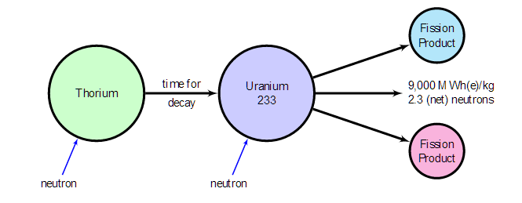

CORRECT!
KAMINI (Kalpakkam Mini reactor) is a research reactor stationed at the Indira Gandhi Centre for Atomic Research (IGCAR) at Kalpakkam in India. It started operation on October 29, 1996 and produces about 30 kW of thermal power. Kamini uses light water as coolant and moderator and 233U as primary fuel. This 233U is provided by the thorium fuel cycle generated by a breeder (FBTR) reactor. India is credited as the world's first country to have designed an experimental reactor especially based on the thorium-based nuclear fuel cycle.
The Nuke Quiz #4
Question 3
Which is the country to have designed the only experimental reactor running on thorium-based nuclear fuel?
